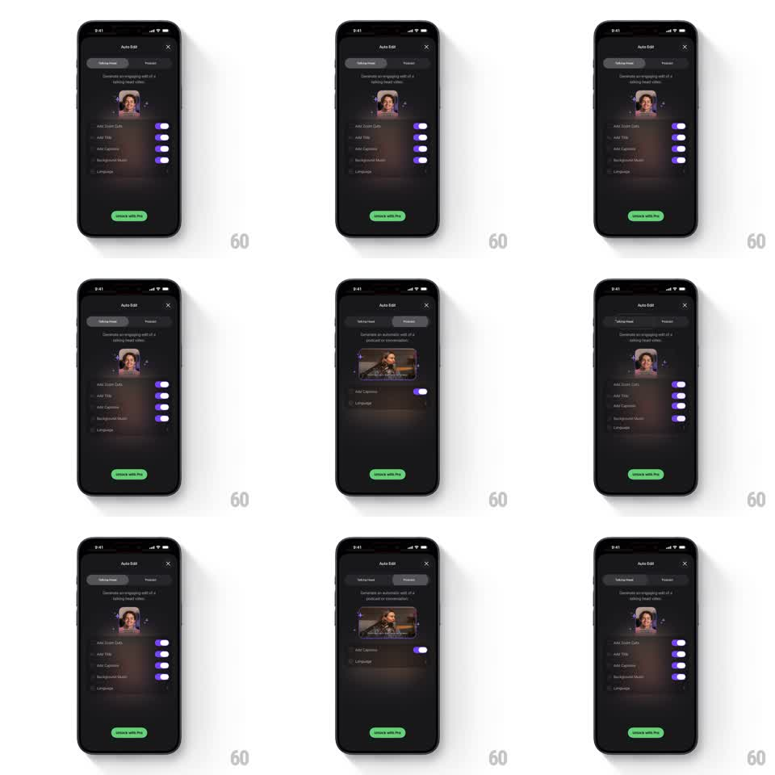

Media
Frame-by-frame

Rebuild this interaction 1:1: an Auto Edit sheet where switching between "Talking Head" and "Podcast" tabs morphs the video preview card's aspect ratio (square avatar to wide 16:9 frame) while the settings toggle list below collapses and re-expands to fit the new tab.

Rebuild this interaction 1:1: an Auto Edit sheet where switching between "Talking Head" and "Podcast" tabs morphs the video preview card's aspect ratio (square avatar to wide 16:9 frame) while the settings toggle list below collapses and re-expands to fit the new tab. ## Integration Integration: stack-agnostic spec - springs given as stiffness/damping, timed motions as duration + curve; map every value to your framework and animation library of choice. ## Scene Dark "Auto Edit" sheet: segmented tab control (Talking Head | Podcast) under the title, a subtitle line, a video preview card (tab A: small square talking-head avatar with sparkles; tab B: wide landscape podcast frame), a settings list with purple toggles (Add Zoom Cuts, Add Title, Add Captions, Background Music, Language), and a green "Unlock with Pro" pill button. ## Motion spec Pattern: shared-element aspect morph + list reflow, ~450ms. - Tab switch: the segmented indicator slides to the new tab (spring ~380/24). - Preview morph: the card animates its aspect ratio from 1:1 to 16:9 (or back) with a spring (~300/20), the content cross-fading inside (200ms) as the frame resizes around center. - List reflow: rows not relevant to the new tab collapse (height -> 0, 250ms, 40ms stagger) while relevant rows expand in; toggles keep their on/off state through the reflow. - Subtitle text cross-fades to the new tab's copy (150ms). ## Calibration - The preview resize is a true aspect morph anchored at center - not a scale, which would crop the content. - Collapsed rows must not leave ghost spacing; the sheet height tracks the content. ## Reduced motion Preview cross-fades between the two aspect frames (200ms); list updates instantly without collapse animation. ## Don't miss - Toggle states are per-tab and persist across switches. - The green CTA and tab control never move - only the preview and list reflow.